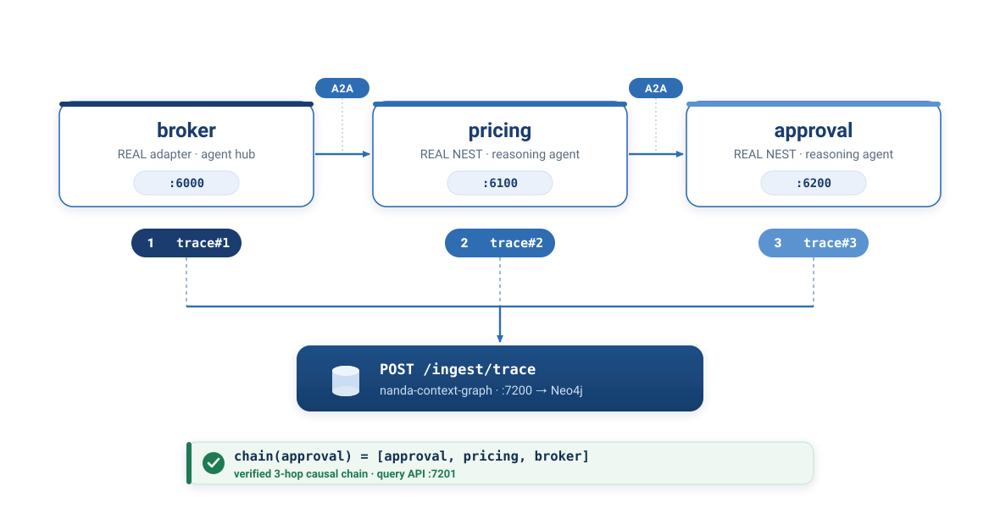

nanda-context-graph (NCG) records why each agent did what it did, and links cause→effect across agents into one queryable graph.
This page explains the project end-to-end and links into two decks: a project presentation and a file-level merge plan. Everything below is the actual design and the actual changes — no projections.
What it is
The NANDA stack already makes an agent discoverable, persistent, and interoperable. What it cannot do today is answer one question:
"What reasoning produced this action — and what caused what across agents?"
When agent A delegates to B and B consults C, the decision chain lives in scattered per-process logs that never join up. NCG is the layer that records each agent's reasoning as a node and stitches the cause→effect chain across processes into a single graph you can query — explainability and auditability for a network of autonomous agents.
Where it fits
NCG does not introduce A2A messaging, discovery, or telemetry. It rides on what is already there and adds the one capability none of them provide.
| Repo | Answers the question |
|---|---|
| adapter | How do I expose my agent and route @agent messages? |
| nanda-index | Where does @agent-id live? (the phone book) |
| NEST | How do I run a reasoning agent with telemetry? |
| nanda-context-graph (new) | What did each agent decide, why, and what caused what? |
The governing principle
Every hook is gated on theNCG_INGEST_URLenvironment variable.
Unset = transparent pass-through. The agent behaves exactly as before.
All trace emission is fire-and-forget on a daemon thread; the request path is untouched.
Every hook is wrapped in try/except; a tracing failure cannot break message handling.
New A2A headers and the registration field are optional; old peers and old indexes ignore them.
How a trace works
Each time an agent handles a message it reasons once — that is one decision,
one trace_id (a fresh UUID). Each decision and its reasoning steps become a
small subgraph; delegations link decisions across agents.
(:Agent) ◄─MADE_BY─ (:Decision {trace_id, outcome, ts}) ─DECIDED_BECAUSE─► (:Step {thought, tool})
(:Decision) ─PRECEDED_BY─► (:Decision) ← the cross-process causal chain (via x-parent-trace)The conversation thread is carried as a2a_msg_id (NEST's existing
conversation_id) and stays constant across turns; each turn gets its own
trace_id. So "everything in conversation X" groups by a2a_msg_id,
while "what caused this decision" follows PRECEDED_BY. Nested or concurrent
calls on one conversation are held in a LIFO stack, so each keeps its own trace.
Tracing is orthogonal to reasoning: NCG never calls an LLM and never needs an API
key. The DecisionTrace schema has no model field — it stores
agent_id, inputs, steps (thought,
tool_name, outcome), output, timestamp:
plain JSON produced by whatever reasoned. A Gemini, GPT, rule-based, or human-in-the-loop
agent registers and traces identically to a Claude agent. The ANTHROPIC_API_KEY
in the demos is only the example agent's own reasoning.
The merge
These are four separate git repos, so this is not one big commit. The new service is its own repo; each existing repo gets a small, opt-in PR reviewed by its own maintainer. Five existing files are touched, plus one new file in NEST.
| Target repo | Files | Change | Breaking? |
|---|---|---|---|
| nanda-context-graph | (new repo) | Ingest API (7200), query API (7201), Neo4j store, dashboard | n/a — new |
| projnanda/adapter | core/nanda.py core/agent_bridge.py |
traced_call() around the improver; thread-local trace context;
x-trace-id/x-parent-trace/x-reason headers on
delegation; optional trace sub-doc in registration |
No |
| projnanda/NEST | telemetry/trace_collector.py (new) telemetry/__init__.py core/agent_bridge.py |
before_call/after_call around handle_message,
keyed on the existing conversation_id; reads/stamps x-parent-trace |
No |
| projnanda/nanda-index | registry.py | POST /register stores optional trace sub-doc via
data.get('trace', {}) |
No |
The file-by-file rationale for every one of these changes is the dedicated merge deck → merge.html, backed by the written PR descriptions linked below.
Verification — actually run
Three OS processes, two frameworks (adapter + NEST), real HTTP A2A, and no agent
business-logic changes — only NCG_INGEST_URL was set.

| Check | Result |
|---|---|
| Adapter integration proof | 11/11 |
| NEST integration proof | 12/12 |
| Collector unit (push/pop/current/drain + nested same-conversation) | pass |
| Query API | pass |
| Real 3-process distributed demo (3-hop chain) | pass |
With NCG_INGEST_URL unset | no behavior change |
Reproduce: python run_demo.py — the distributed proof is Phase 6.
Read in this order
Supporting documents (Markdown):